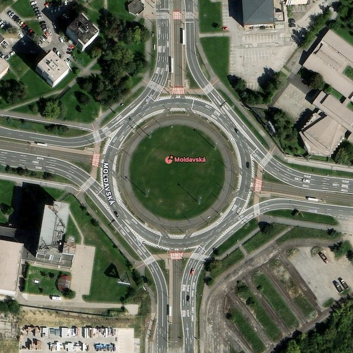
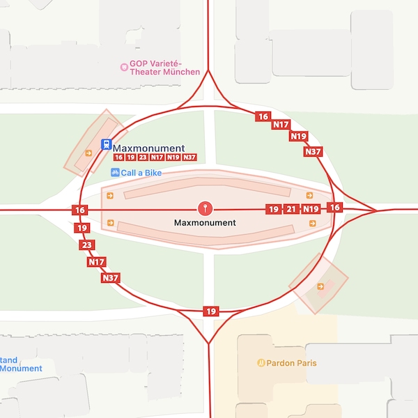

🔄 Tram Roundabouts


🇳🇱 4️⃣
Amsterdam
Slotermeerlaan
🇧🇪 4️⃣
Brussels
Verboekhoven
🇵🇱 4️⃣
Katowice
Rondo Będzin
🇵🇱 4️⃣
Katowice
Rondo Chebzie Pętla
🇨🇿 4️⃣
Plzeň
Americká
🚎
🇷🇸 3️⃣
Belgrade
Slavija
🇩🇪 3️⃣
Berlin
Bersarinplatz
🇧🇪 3️⃣
Brussels
Barrière de Saint-Gilles
🇳🇱 3️⃣
Den Haag
Rond de Grote Kerk
🇵🇹 3️⃣
Lisbon
Praça Luís de Camões
🇧🇪 2️⃣
Brussels
Altitude Cent
🇧🇪 2️⃣
Brussels
Churchill
🇧🇪 2️⃣
Brussels
Meerplein
🇧🇪 2️⃣
Brussels
Place Dumon
🇧🇪 2️⃣
Brussels
Bienfaiteurs
🇳🇱 2️⃣
Den Haag
Prins Hendrikplein
🇳🇱 2️⃣
Den Haag
Plein 1813
🇩🇪 2️⃣
Karlsruhe
Kaiserplatz
🇵🇱 2️⃣
Katowice
Koszutka Słoneczna Pętla
🇵🇱 2️⃣
Katowice
Plac Wolności
🇳🇱 4️⃣
Amsterdam
Haarlemmermeer
🇳🇱 4️⃣
Amsterdam
Weteringschans
🇷🇺 4️⃣
Barnaul
Malakhova
🇷🇺 4️⃣
Komsomolsk
Ploschad Metallurgov
🇸🇰 4️⃣
Košice
Moldavská
🇵🇱 4️⃣
Kraków
Nowa Huta
🇵🇱 4️⃣
Łódź
Rondo Lotników Lwowskich
🇩🇪 4️⃣
Munich
Maxmonument
🇮🇹 4️⃣
Rome
Porta Maggiore
🇷🇺 4️⃣
Ulan-Ude
Bogatyrsky Most
🇷🇺 4️⃣
Ulyanovsk
Pushkareva
🇷🇺 4️⃣
Yekaterinburg
Kinostudia
🇳🇱 3️⃣
Amsterdam
Surinameplein
🇳🇱 3️⃣
Amsterdam
Tropenmuseum
🇺🇸 3️⃣
New Orleans
Tivoli Circle
🇩🇪 3️⃣
Hannover
Goetheplatz
🇵🇱 3️⃣
Łódź
Plac Wolności (Łódź)
🇧🇾 3️⃣
Minsk
Zmitraka Biaduli
🇩🇪 3️⃣
Munich
Romanplatz
🇷🇺 3️⃣
Nizhny Novgorod
Komsomolskaya Ploschad
🇷🇺 3️⃣
Nizhny Novgorod
Lapshikha
🇭🇷 3️⃣
Zagreb
Trg Žrtava Fašizma
🇳🇱 2️⃣
Amsterdam
Hoofddorpplein
🇷🇺 2️⃣
Krasnoyarsk
Predmostnaya Ploschad
🇩🇪 2️⃣
Munich
Karolinenplatz
🇮🇹 2️⃣
Rome
Regina Margherita
🇷🇺 2️⃣
Saint Petersburg
Moscow Triumphal Gate
🇷🇺 2️⃣
Saint Petersburg
Turgenev Square
🇵🇱 1️⃣
Katowice
Rondo Jana Pawła II
For road circles, see
Roundabouts
.
For loops whose primary purpose is reversing, see
Loops
.
For four-way tram intersections, see
Grand Unions
.
{kind=link}
{kind=link}